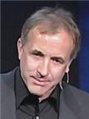

Patrones, mitos y creer cosas extrañas: Michael Shermer en TED 2006
La aparente «cara» en Marte
Algo que aprendemos muy pronto en la vida es que lo que creemos y la realidad no siempre coincide, pero notablemente no examinamos muchas de nuestras creencias, en particular las aceptadas socialmente, las que nos fueron inculcadas en la infancia y aquellas que están dadas por nuestras características como especie.
En este sentido, la charla que hoy les traigo es una de las exposiciones más amenas y claras que he visto sobre el poder de los mitos y la abundancia de ellos a nuestro alrededor.
La naturalidad de lo extraño
Representación de la visión aristotélica del Universo
El título dice: «Creer cosas extrañas», pero en realidad podría llamarse: «Mitos: Las creencias naturales», y con esto me refiero a que lo más natural es creer cosas que quizás sean absurdas, pero lo son a la medida humana.
Como especie tenemos una historia evolutiva que nos hace percibir de cierta manera al mundo. Por ejemplo, somos seres sociales, lo que hace que nos resulte particularmente importante conocer, o al menos, suponer qué piensan y sienten las personas que nos rodean.
Y si bien atribuirles intenciones y sentimientos a otras personas es un modelo adecuado de la realidad, la cosa se pone interesante cuando comenzamos a adjudicarle personalidad a fenómenos que no pueden tenerla, como la lluvia, el mar, el ciclo agrícola, el sol, y demás cosas que han sido el punto de partida de muchas religiones.
Tláloc, dios azteca de la lluvia
En otras palabras, una herramienta útil en determinado contexto (otras personas) se vuelve origen de cosas absurdas (sacrificios, cultos, justificación de atrocidades, autoritarismo, artículos de fe, guerras, etc.) cuando es aplicado en algo que no es humano, como la naturaleza o las leyes de la biología o la física.
Otro ejemplo, mencionado en la charla, es el reconocimiento de rostros, y creo que cualquiera ha visto caras y figuras reconocibles en manchas de una pared o en la comida, y sin embargo ciertos patrones y dibujos se siguen considerando excepcionales (es decir milagrosos). Más bien lo excepcional es la capacidad del cerebro humano para reconocer tales patrones.
Pero creo que lo que hacemos con estos mitos es en realidad «convertir» lo que nos rodea, el mundo, el Universo, a una medida humana, a una perspectiva comprensible para nosotros, dadas nuestras limitaciones como especie.
Pata de conejo para la buena suerte
Por eso es más sencillo pensar que la vida «tiene algo» contra ti o a favor tuyo, que hay seres (similares a humanos) o al menos un ser lo bastante humano como para interesarse en gobernar los eventos de tu vida, que hay un consejo de individuos oscuros que gobiernan a su antojo la economía mundial, que la vida después de la muerte será muy parecida a esta existencia biológica, etcétera. Nuestra solución es darle personalidad, darle estatura humana, darle apariencia conocida a eventos complejos fuera de nuestra comprensión actual.
Y bueno, lo anterior funciona porque nos da la seguridad y confianza de que conocemos al mundo, una mentira claro, pero es una buena mentira ya que nos deja dormir tranquilos en medio de un universo desconocido y complejo.
Después de todo, lo que como especie percibimos no es el mundo tal como es, es el mundo tal como hemos necesitado verlo durante millones de años (como especie) y por cientos y decenas de años (como sociedad y cultura) para poder sobrevivir.
Por lo anterior creo que lo antinatural no es creer cosas extrañas, lo antinatural es el pensamiento científico que, conforme pasa el tiempo, nos muestra una imagen cada vez más fiel del Universo, el cual se nos muestra cada vez menos humano.
El ponente
Michael B. Shermer es un escritor científico estadounidense, fundador de The Skeptics Society y editor en jefe de la revista Skeptic.
Estudió la licenciatura y la maestría en Psicología y obtuvo su doctorado en Historia de la ciencia, a pesar de inicialmente haber pretendido estudiar teología cristiana. Ha escrito numerosos libros sobre la ubicuidad de las creencias sin fundamento y fue conductor de una serie de televisión sobre el mismo tema llamada Exploring the Unknown. De entre sus libros destaca su obra: “Porqué creemos cosas raras” (en inglés: Why People Believe Weird Things), publicado en 1997 y reeditado en 2002.
Como dato anecdótico, fue hasta el año 2006 que el Dr. Shermer aceptó que negar el calentamiento global ya no era una posición sostenible ante la evidencia científica, mientras que antes había manifestado escepticismo sobre la realidad del fenómeno.
En la siguiente conferencia el Dr. Shermer ofrece un vistazo sobre mitos e ilusiones que muchas personas aceptan como reales, terminando con una divertida anécdota musical. Que la disfruten.
Porqué creemos cosas extrañas
La verdad, aunque sea difícil.
[Charla completa en YouTube por cortesía de Keny.]
*Descarga la conferencia (640×480): Parte 1 Parte 2
Video: Xvid, audio: mp3, tipo: AVI, tamaño: 121MB.
>> Compatible con reproductores certificados DivX.
Descarga las partes a la misma carpeta y descomprime con WinRar.
Traducción y subtítulos: Ajmme Kajros
En TED: Michael Shermer on strange beliefs
*Video subtitulado y distribuido bajo los términos de uso de TED Conferences LLC.
Metadatos y acciones
 Temas: ciencia, cultura, filosofia, mitos, tedtalk, video ⋅
Para guardar: Enlace permanente a esta anotación.
Temas: ciencia, cultura, filosofia, mitos, tedtalk, video ⋅
Para guardar: Enlace permanente a esta anotación.
 Print This Post
Print This Post
Comentarios
Los comentarios están cerrados.
Categorías
Últimas 4 anotaciones
Últimas anotaciones en cada categoría

Divulgación
El dinero no fomenta la creatividad: Daniel Pink en TEDGlobal 2009

Inspiración
Los 30 no son los nuevos 20

Noticias
Ver tu mente en tiempo real: Christopher deCharms en TED 2008
![Música en la era digital [Animación]](../../../wp-content/themes/tma/images/featured/animation_04_2009_featured.jpg)
Ocio
Música en la era digital [Animación]
agosto 9, 2009, 6:32 pm
Información Bitacoras.com…
Valora en Bitacoras.com: La aparente «cara» en Marte Algo que aprendemos muy pronto en la vida es que lo que creemos y la realidad no siempre coincide, pero notablemente no examinamos muchas de nuestras creencias, en particular las aceptadas socialme…
agosto 9, 2009, 9:52 pm
Como siempre, muy buen trabajo el que subtitulas. Gracias. Bajando . . .
agosto 10, 2009, 3:05 am
Estupendo trabajo y muy amena la charla.
Cuando intento bajarla me dice que no está disponible “El enlace del archivo que has solicitado no es válido.”
¿Es problema mío?
Saludos y felicidades por el trabajo realizado.
agosto 10, 2009, 6:21 am
Muchas gracias por los comentarios.
No sé que ocurrió, pero acabo de revisar los enlaces y ya está funcionando la descarga.
agosto 23, 2009, 9:17 am
Excelente trabajo
agosto 26, 2009, 8:07 am
Buena historia.
Creo que hay una errata: donde dice “hasta el año 2006″ debería decir “desde el año 2006″. ¿O no?
saludos
agosto 26, 2009, 12:12 pm
@Evolutionibus
Gracias por comentarlo.
En realidad se trata de un localismo (involuntario). En algunas partes de México y de América Central “hasta” puede significar “no antes de”. Marcas el inicio de algo, recalcando que antes no ocurrió.
Lo modifico esperando que se entienda mejor. Saludos. ^_^